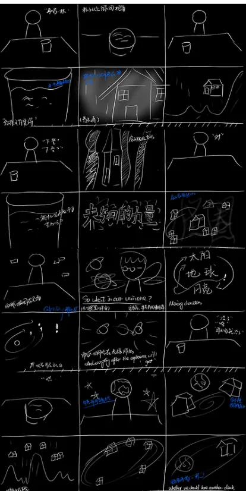
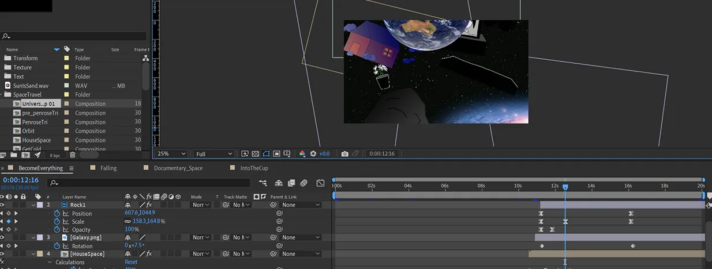
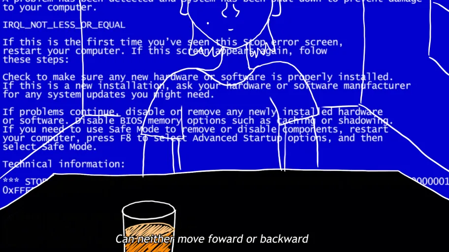
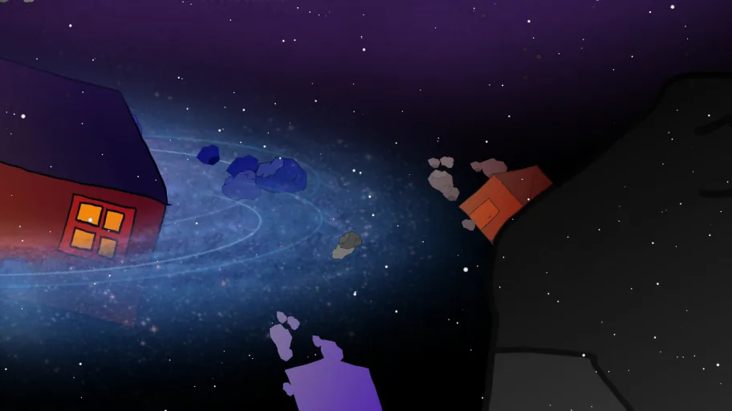
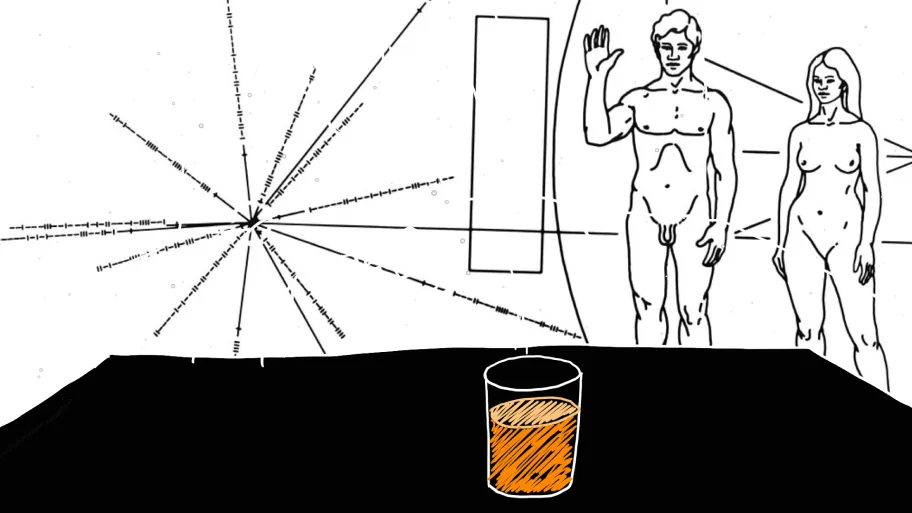
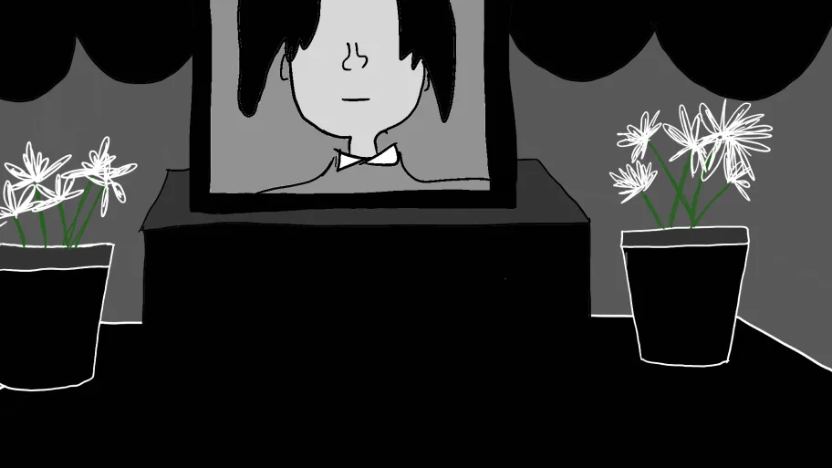
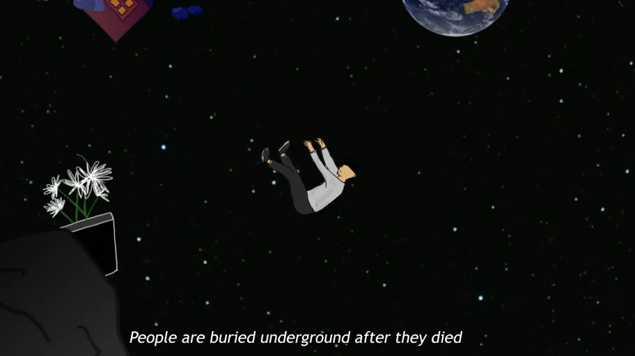
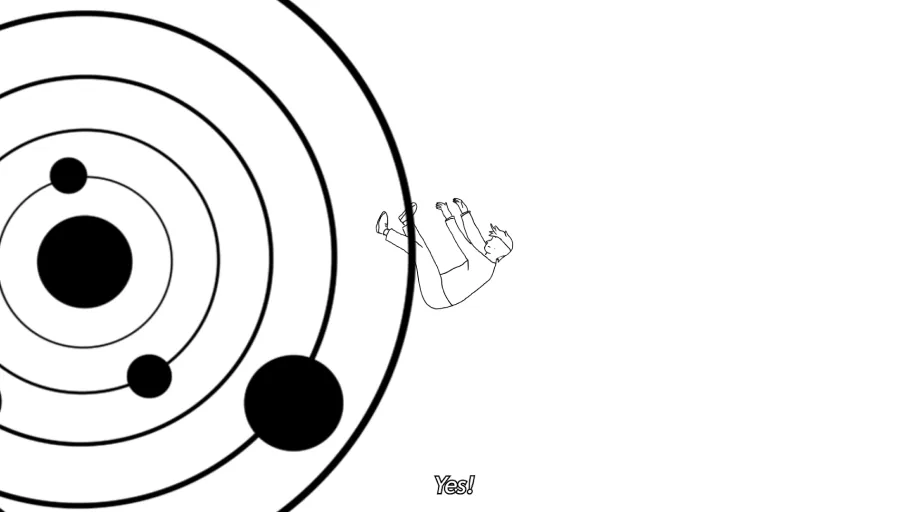
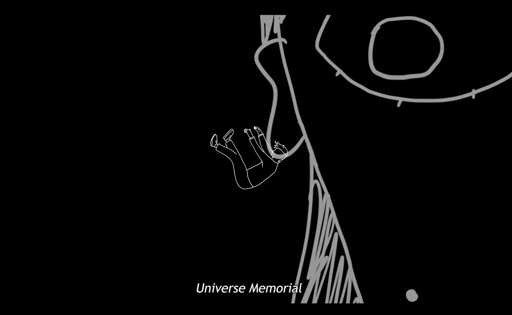

宇宙 (Yu Zhou) is the Universe. And 灵堂 (Ling Tang), unique to Chinese culture, is a shrine or a memorial devoted to those who have passed away. Ling Tang typically has a coffin and a black-and-white photograph of the deceased. 宇宙灵堂 denotes the memorial built after the universe died — an ultimate representation of nothingness. If our whole world is approaching nothing, then who are we right now?
It was a night on the Brooklyn Bridge, with the wind brushing against my face and the traffic roaring around me. I knew that the water was surging beneath and, deep in the dark sky, planets were drifting incessantly. As I walked along this seemingly endless bridge, I had a sudden realization that, much like all the other motions in the world, our lives simply continue to go on.
Moodboard & Inspirations
Films by Chinese Director 刘健 (Liu Jian): Piercing I (2010), Have a Nice Day (2018)
Liu Jian combines the aesthetics of unpolished drawings with 80s Chinese animation style in his movies. From the views of mundane characters, he narrates stories that show sarcasm and power.
Multiverse
In the film Everything Everywhere All At Once (2022), characters' struggles and feelings are carried across the multiverse. In different worlds, they are all trapped in similar plights.
Everything and Nothing (2011)
A documentary where doctor Jim Al-Khalili discussed what is nothingness from a scientific perspective, explaining how the universe is expanding and how stars are getting farther from us rapidly.
My Life
Living real while feeling digital.


Storytelling Strategies
Doodles / Unpolished Drawing
By using unpolished drawing, the animation brings audiences into a dark and empty atmosphere. It evokes the feeling of being nostalgic, fragile, and volatile.
Abrupt and Frequent Cuts
Abrupt and frequent cuts, flashing imagery, and glitching effects are used to convey the hallucination of characters.
Foreshadowing and Correspondence
Foreshadowing contributes to the coherence of the story. The character wearing a sweatshirt with the logo "NASA" foreshadows the fantasy of universe occurring later. This character will indeed become the earth in the hallucination.






你说，人死了埋在土里，那宇宙死了去哪里
So, people are buried underground after they died. Where does the universe go after it dies?
宇宙？宇宙还会死吗？
Universe? Will the universe die?
会的！宇宙在变得越来越大，星星在离我们越来越远
Yes! The universe is getting larger, and the stars are getting farther from us.
宇宙死了的时候你早就没了，你还在想什么？
You already died when the universe is gone. What are you talking about?
宇宙灵堂吧。
It's the Universe Memorial.
啥？
What?
等宇宙死了，依旧还存在的，就是宇宙灵堂吧
When the universe had gone, what still exists is probably the Universe Memorial.
